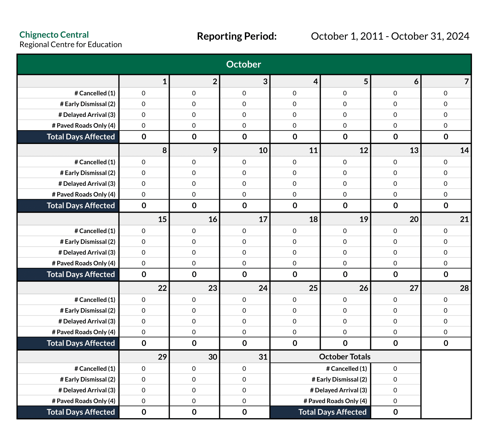
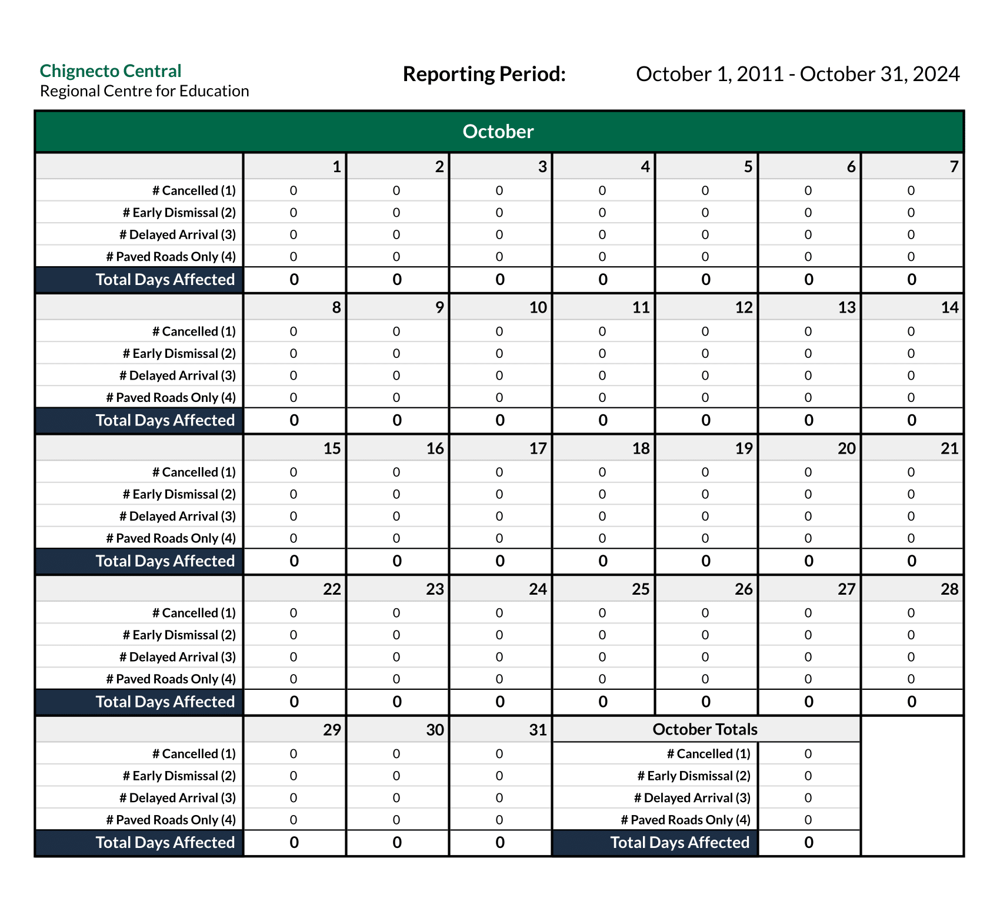
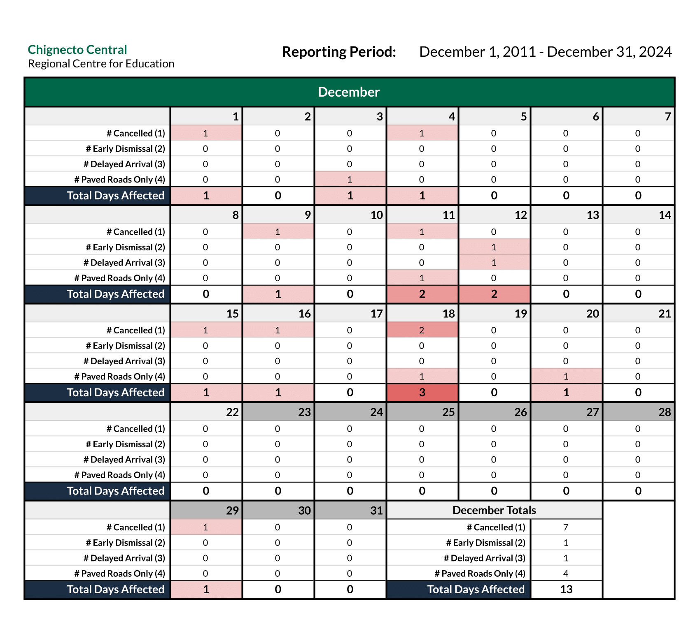
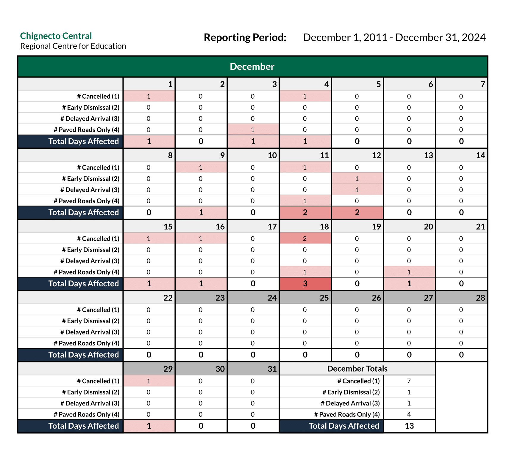

Heatmap Data
Colchester County
Cancellations by Month
The following heatmaps have been generated using the raw storm day data from September 1, 2011 to February 4, 2025. Updated heatmaps will usually be added at the end of the academic year.
Dates shaded in a dark grey indicate a holiday or day which will always fall under a scheduled break.
*Data collected on days which have since became a recognized holiday will continue to be displayed and count towards monthly quotas.
 

 


Disclaimer
This website may not be 100% accurate, and was created for educational purposes only. While efforts are/have been made to ensure accuracy, the data was collected manually using search filters.
As this dataset is intended to represent the entirety of the County of Colchester, any cancellations made for an individual school (e.g. power outages) have been omitted.
Raw Data
Raw data is collected using Google Sheets. Due to the limitations of embedded content from Google Workspace, only historical snapshots will be posted to this website. The link to all of the live raw data can be found here. Typically data is added from the Inclement Weather Notifications within 1-3 days.